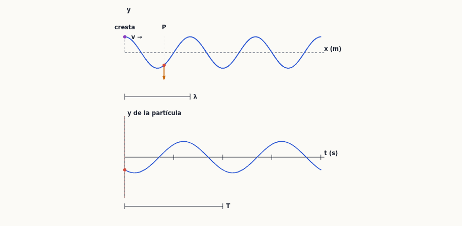
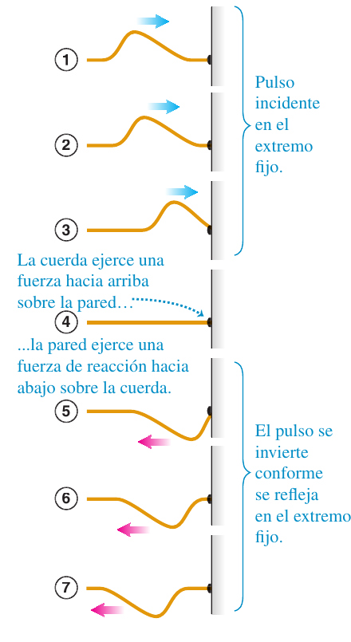
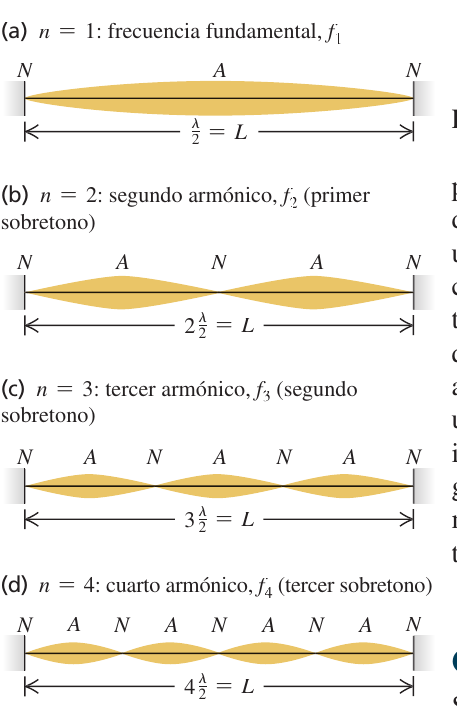
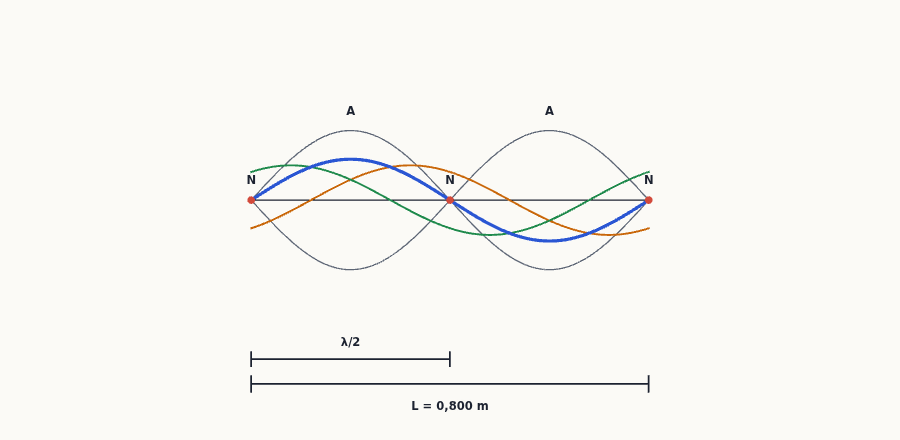

Ondas mecánicas
Una cuerda de guitarra, la «ola» de un estadio, el sonido que llega a tu oído, un terremoto: en todos ellos una perturbación viaja por un medio sin que el medio avance con ella. Este tema te enseña a describir una onda con tres números ($A$, $\lambda$, $f$), a escribir su función de onda $y(x,t)$, a calcular su rapidez y la potencia que transporta, y a entender por qué una cuerda sujeta por los dos extremos solo suena con ciertas frecuencias (las ondas estacionarias y los modos normales).
El tema en 5 minutos P
Una sola idea: una onda mecánica es una perturbación que viaja por un medio (cuerda, aire, agua) mientras cada trozo del medio solo oscila en su sitio, con un MAS como los del tema 14. Lo que viaja es la forma y la energía, no la materia. Con tres números ($A$, $\lambda$, $f$) se escribe la función de onda $y(x,t)$; el medio fija la rapidez ($v=\sqrt{F/\mu}$ en una cuerda) y la fuente fija la frecuencia. Cuando una onda se refleja y se suma con la de vuelta aparece una onda estacionaria, con puntos quietos (nodos); si la cuerda está fija por los dos extremos, solo «caben» ciertas frecuencias: los modos normales, $f_n=nf_1$.
Necesitas: el MAS (T14: $\omega=2\pi f$, $v_{máx}=\omega A$, $a=-\omega^2y$); la segunda ley de Newton y la tensión de una cuerda que sostiene un peso (T4-T5); la potencia $P=dW/dt$ (T6); derivadas parciales ($\partial y/\partial t$ con $x$ fijo); y $\cos(a\pm b)=\cos a\cos b\mp\sin a\sin b$, que aparece una vez, al deducir la onda estacionaria.
El método en 4 pasos (úsalo siempre, en este orden)
Es el planteamiento de las dos estrategias para resolver problemas del capítulo 15 del libro (ondas mecánicas y ondas estacionarias: identificar, plantear, ejecutar, evaluar). U p.475, 490
Las 6 fórmulas que hay que saber
| Fórmula | Cuándo se usa |
|---|---|
| $v=\lambda f$, $\ \omega=2\pi f$, $\ k=\dfrac{2\pi}{\lambda}$, $\ v=\dfrac\omega k$ | Siempre: «longitud de onda de un sonido de … Hz», «frecuencia, periodo y número de onda», pasar de unas magnitudes a otras. |
| $y=A\cos(kx-\omega t)$ (hacia $+x$), $\ A\cos(kx+\omega t)$ (hacia $-x$) | «escribe la función de onda», «¿hacia dónde viaja?», «desplazamiento del punto $x$ en el instante $t$». |
| $v_y=\dfrac{\partial y}{\partial t}$, $\ v_{y,máx}=\omega A$, $\ a_{y,máx}=\omega^2A$ | «rapidez transversal de una partícula», «aceleración máxima de un punto de la cuerda» (¡no es $v$!). |
| $v=\sqrt{\dfrac F\mu}$, $\ \mu=\dfrac mL$ | «tensión necesaria», «cuerda que pasa por una polea con una masa», «cuerda que pesa…», «qué pasa si se duplica la tensión». |
| $P_{med}=\tfrac12\sqrt{\mu F}\,\omega^2A^2$, $\ I=\dfrac{P}{4\pi r^2}$ | «potencia media que transporta», «si la amplitud se reduce a la mitad», «intensidad a otra distancia de una fuente puntual». |
| $y=(2A\sin kx)\sin\omega t$; $\ L=n\dfrac{\lambda_n}2$, $\ f_n=n\dfrac{v}{2L}=nf_1$ | «onda estacionaria», «nodos y antinodos», «fundamental, armónicos, sobretonos», «dónde poner el dedo», «dos armónicos consecutivos». |
Qué cae en examen
Seamos claros: en las convocatorias disponibles (2018-2025) no ha caído ningún problema numérico de ondas mecánicas. Ha caído una pregunta de teoría de 4 puntos: «Ondas estacionarias en una cuerda» (Febrero 2019, 1ª semana; el enunciado es solo el título; X1). X Por eso las secciones 6-8 (superposición, ondas estacionarias y modos normales) son las más rentables: son el guion de esa pregunta, y las dos cuestiones cortas que acompañan a la teoría desde 2022 suelen ser del tipo «¿qué pasa con $f$ si cuadruplico la tensión?» o «¿qué modos quedan si toco la cuerda en un punto?» (te dejamos dos resueltas, C1 y C2, propias, no de examen). Los problemas del solucionario sirven para entender las fórmulas y para las PEC.
Elige tu ruta
Esta página + lo marcado 🔴 imprescindible (secciones 2-4 y 6-8) + X1 (desarrollo modelo) y C1-C2 + del Núcleo 15.28, 15.36 y 15.44.
Todo lo anterior + 🟡 tipos de onda y energía + el resto del «Núcleo» + bloque «Práctica».
Chuleta, errores frecuentes, lista de comprobación; escribe «Ondas estacionarias en una cuerda» en una cara en 25 minutos y compáralo con X1.
¿?¿Qué tipo de problema es? 🔴 P
Lee el enunciado, busca la pista en la primera columna y ve directo al método y al ejercicio modelo.
| Si el enunciado dice… | Haz esto | Ejercicio modelo |
|---|---|---|
| «sonido de … Hz, rapidez 344 m/s: longitud de onda y periodo», «una octava más alta» | $\lambda=v/f$, $T=1/f$; $v$ la fija el medio, no cambia con $f$. | 15.1 |
| «viaja hacia $-x$ y en $t=0$ el extremo está en su máximo: escribe $y(x,t)$», «¿cuánto tarda en volver al máximo?» | $k$, $\omega$; signo $+$ para $-x$; coseno si arranca en el máximo; números con $2\pi(x/\lambda\pm t/T)$. | 15.7 |
| «la función de onda es $y=\dots$: amplitud, frecuencia, $\lambda$, rapidez, sentido, tensión, potencia» | Lee $A$, $k$, $\omega$ → $f$, $\lambda$, $v=\omega/k$ → $F=\mu v^2$ → $P_{med}$. | 15.28, 15.48, 15.18 |
| «pasa por una polea y sostiene una masa», «¿qué tensión para que $\lambda$ sea…?» | $F=mg$ → $v=\sqrt{F/\mu}$ → $\lambda=v/f$ (o al revés: $v=\lambda f$ → $F=\mu v^2$). | 15.15, 15.16 |
| «cuerda pesada que cuelga», «rapidez arriba, en medio y abajo», «cuerda que gira» | Tensión variable: $F$ = peso (o fuerza centrípeta) de todo lo que hay más allá del punto; $v$ punto a punto. | 15.20, problema práctico |
| «potencia media que transporta», «si la amplitud se reduce a la mitad» | $P_{med}=\tfrac12\sqrt{\mu F}\,\omega^2A^2$: $\propto A^2$, $\propto\omega^2$, $\propto\sqrt F$. | 15.22 |
| «fuente puntual», «intensidad a 30 m», «¿a qué distancia la intensidad es…?» | $I=P/4\pi r^2$; $r_2=r_1\sqrt{I_1/I_2}$. | 15.25 |
| «dos pulsos que se acercan: dibuja la cuerda en $t=\dots$» | Superposición: desplaza cada pulso $vt$ sin deformarlo y suma punto a punto. | 15.32 |
| «antinodos separados…», «amplitud y rapidez de las ondas viajeras», «rapidez transversal en un antinodo» | N–N = A–A = $\lambda/2$; $A_{viajera}=A_{OE}/2$; cada punto es un MAS de amplitud $A_{OE}|\sin kx|$. | 15.36, 15.66 |
| «frecuencia fundamental», «armónico más alto audible», «la tensión aumenta un 1 %» | $f_1=\frac1{2L}\sqrt{F/\mu}$; $n\le f_{lím}/f_1$ (parte entera); $\Delta f/f\approx\tfrac12\Delta F/F$. | 15.40, 15.47 |
| «segundo sobretono», «sonido de longitud de onda … en el aire» | Sobretono $n-1$ ⇒ armónico $n$; puente cuerda-aire = la frecuencia: $\lambda_{aire}=v_{aire}/f$. | 15.44 |
| «¿dónde poner el dedo para tocar…?», «sin volver a afinar» | Misma cuerda y tensión ⇒ misma $v$ ⇒ $f_1L=$ cte. | 15.45 |
| «dos ondas estacionarias consecutivas de 624 y 780 Hz» | $f_1$ = diferencia; $n$ = el cociente; luego $F=\mu(2Lf_1)^2$. | 15.58 |
| «Desarrolle el tema: ondas estacionarias en una cuerda», «¿qué pasa si…?» | Guion: viajera → reflexión y superposición → $(2A\sin kx)\sin\omega t$ → nodos → $L=n\lambda/2$ → $f_n$. | Teoría, C1, C2 |
1Tipos de ondas mecánicas 🟡 U p.469-470
🎯 Antes de leer: en «la ola» de un estadio, ¿se desplaza la gente de un lado a otro del estadio o solo se levanta y se sienta? ¿Qué es lo que viaja entonces? (Piénsalo 20 s; la respuesta está en esta sección.)
Piensa en «la ola» de un estadio: la perturbación (levantarse y sentarse) recorre las gradas, pero ningún espectador se va a la otra punta; cada uno sube y baja en su sitio. Una onda mecánica es eso: una perturbación que viaja por un medio que tiene un estado de equilibrio y una fuerza restauradora que lo devuelve a él (la tensión en una cuerda, la presión en un fluido). Transporta energía, no materia.
- Transversal: las partículas se mueven perpendicularmente a la dirección en que viaja la onda (una cuerda; «la ola» del estadio).
- Longitudinal: se mueven paralelamente a ella (el sonido en un tubo o en el aire: compresiones y enrarecimientos).
- Las olas en la superficie del agua combinan las dos: las partículas describen círculos.
La rapidez $v$ de la onda depende solo de las propiedades del medio, no de cómo se agita la fuente.
Error típico: creer que la onda «arrastra» el medio. Una boya sube y baja con las olas, pero no se va con ellas.
U p.469-470
✍️ Comprueba que lo has entendido (2 min)
- ¿Qué tipo de onda es «la ola» de un estadio? ¿Y el sonido en el aire?
Ver respuesta
«La ola», transversal: viaja en horizontal y cada espectador se mueve en vertical. El sonido en el aire, longitudinal: el aire se comprime y se expande en la misma dirección en que viaja. - Un corcho flota en un estanque y pasa una ola. ¿Llega el corcho a la orilla con la ola?
Ver respuesta
No: sube y baja (describe un pequeño círculo) en su sitio. Lo que viaja es la perturbación y su energía. - Agitas más deprisa el extremo de una cuerda. ¿Cambia la rapidez con que viaja la onda?
Ver respuesta
No: $v$ la fija el medio (tensión y masa por metro). Cambia la frecuencia, y con ella la longitud de onda.
2Ondas periódicas: $\lambda$, $T$, $f$ y $v=\lambda f$ 🔴 U p.470-473
🎯 Antes de leer: un sonido de 440 Hz tiene una longitud de onda de 0,78 m. ¿Cómo calcularías su rapidez? (Piénsalo 20 s; la respuesta está en esta sección.)
Sacude el extremo de una cuerda una vez y viaja un pulso; sacúdelo de forma regular y viaja un tren de ondas periódico. Hay dos formas de mirarlo:
- Una foto (tiempo congelado, $y$ contra $x$): la distancia entre dos crestas es la longitud de onda $\lambda$.
- La película de un punto ($y$ contra $t$ en un $x$ fijo): el tiempo entre dos máximos es el periodo $T$; $f=1/T$ (Hz) y $\omega=2\pi f$. Son los de la fuente: cada partícula hace un MAS de amplitud $A$.
En un periodo la cresta avanza justo una longitud de onda, así que
$$v=\frac{\lambda}{T}=\lambda f\qquad(15.1)$$Ejemplo mínimo (ejemplo 15.1 de U): el sonido viaja a 344 m/s en el aire a 20 °C; el do central, $f=262$ Hz, tiene $\lambda=344/262=1{,}31$ m. Una octava más alta ($f$ doble), $\lambda$ se reduce a la mitad.
Error típico: pensar que al doblar $f$ se dobla $v$. En un medio dado $v$ es fija: si $f$ sube, $\lambda$ baja en la misma proporción (al duplicar $\lambda$ en una cuerda, $f$ se reduce a la mitad).
U p.470-473✍️ Comprueba que lo has entendido (2 min)
- Un altavoz emite una nota de 440 Hz en el aire ($v=344$ m/s). ¿$\lambda$ y $T$?
Ver respuesta
$\lambda=344/440=0{,}782$ m; $T=1/440=2{,}27$ ms. - En un estanque las crestas están separadas 2,0 m y por delante de un poste pasan 3 crestas cada segundo. ¿Rapidez de las olas?
Ver respuesta
$f=3{,}0$ Hz ⇒ $v=\lambda f=(2{,}0)(3{,}0)=6{,}0$ m/s. - En la misma cuerda y con la misma tensión duplicas la frecuencia. ¿Qué pasa con $v$ y con $\lambda$?
Ver respuesta
$v$ no cambia (la fija la cuerda); $\lambda=v/f$ se reduce a la mitad.
3La función de onda $y(x,t)$ 🔴 U p.473-478
🎯 Antes de leer: $y(x,t)=A\cos(kx-\omega t)$ describe una onda que viaja hacia $+x$. ¿Qué cambiarías para que viajara hacia $-x$? (Piénsalo 20 s; la respuesta está en esta sección.)
Para describir toda la cuerda en todo instante hace falta una función de dos variables, $y(x,t)$: el desplazamiento del punto $x$ en el instante $t$. Si el extremo $x=0$ oscila con $A\cos\omega t$ y la onda viaja hacia $+x$, el punto $x$ repite ese movimiento con retraso $x/v$ (lo que tarda en llegarle la onda). Con el número de onda $k=2\pi/\lambda$ (rad/m) y $\omega=vk$ (15.5, 15.6):
$$\boxed{y(x,t)=A\cos(kx-\omega t)}\ \text{hacia }+x\ (15.7)\qquad\boxed{y(x,t)=A\cos(kx+\omega t)}\ \text{hacia }-x\ (15.8)$$o, con $\lambda$ y $T$, $y=A\cos2\pi\left(\dfrac x\lambda\mp\dfrac tT\right)$ (15.4). Regla del signo: una cresta mantiene la fase $kx\mp\omega t$ constante, luego $dx/dt=\pm\omega/k$: con el signo $-$ avanza hacia $+x$.
Ejemplo mínimo (ejemplo 15.2 de U, el tendedero): $f=2{,}00$ Hz, $A=0{,}075$ m, $v=12{,}0$ m/s y el extremo empieza en su máximo. Entonces $\omega=4{,}00\pi=12{,}6$ rad/s, $\lambda=v/f=6{,}00$ m, $k=2\pi/\lambda=1{,}05$ rad/m y $y=(0{,}075\ \text{m})\cos(1{,}05x-12{,}6t)$. El punto $x=3{,}00$ m $=\lambda/2$ hace el mismo MAS pero en oposición de fase con el extremo.
Error típico: leer $f=\omega$ o $\lambda=1/k$; o usar $kx-\omega t$ para una onda que va hacia $-x$.
U p.473-476
Fijando $x$ y derivando respecto a $t$ (derivadas parciales) se obtiene el movimiento de un trozo de cuerda:
$$v_y=\frac{\partial y}{\partial t}=\omega A\sin(kx-\omega t)\ (15.9)\qquad a_y=\frac{\partial^2y}{\partial t^2}=-\omega^2y\ (15.10)$$Cada partícula hace un MAS: $v_{y,máx}=\omega A$ (al pasar por $y=0$) y $a_{y,máx}=\omega^2A$ (en cresta y valle, donde está parada). Derivando dos veces respecto a $x$ y comparando se llega a la ecuación de onda, que cumple cualquier onda que viaja con rapidez $v$ sin deformarse:
$$\frac{\partial^2y}{\partial x^2}=\frac1{v^2}\frac{\partial^2y}{\partial t^2}\qquad(15.12)$$Error típico: confundir $v$ (rapidez de la onda, constante, $v=\omega/k$) con $v_y$ (rapidez de una partícula, cambia con $x$ y $t$). Pueden ser muy distintas: con frecuencia y amplitud grandes, las partículas van más deprisa que la onda.
U p.476-477✍️ Comprueba que lo has entendido (2 min)
- Una onda es $y=(0{,}020\ \text{m})\cos(3{,}0x-12t)$ (SI). ¿$\lambda$, $f$, $v$, sentido y rapidez máxima de una partícula?
Ver respuesta
$\lambda=2\pi/3{,}0=2{,}09$ m; $f=12/2\pi=1{,}91$ Hz; $v=\omega/k=12/3{,}0=4{,}0$ m/s hacia $+x$ (signo $-$); $v_{y,máx}=\omega A=(12)(0{,}020)=0{,}24$ m/s. - Escribe la función de onda de una onda hacia $-x$ con $A=5{,}0$ cm, $\lambda=0{,}50$ m y $f=4{,}0$ Hz, si en $t=0$ el punto $x=0$ está en su máximo.
Ver respuesta
$k=2\pi/0{,}50=4\pi=12{,}6$ rad/m; $\omega=2\pi(4{,}0)=8\pi=25{,}1$ rad/s; $y=(0{,}050\ \text{m})\cos(12{,}6x+25{,}1t)$. - Dos puntos de la cuerda están separados media longitud de onda. ¿Cómo se mueven uno respecto al otro?
Ver respuesta
Hacen el mismo MAS pero en oposición de fase: cuando uno está en la cresta, el otro está en el valle (desfase $k\lambda/2=\pi$).
4Rapidez de una onda en una cuerda: $v=\sqrt{F/\mu}$ 🔴 U p.478-482
🎯 Antes de leer: si tensas más una cuerda de guitarra, ¿suena más grave o más aguda? ¿Qué le pasa a la rapidez de la onda? (Piénsalo 20 s; la respuesta está en esta sección.)
Dos efectos compiten: la tensión $F$ es la fuerza restauradora (más tensa ⇒ cada trozo tira con más fuerza del siguiente ⇒ más rápida; una cuerda más tensa suena más aguda) y la masa por unidad de longitud $\mu=m/L$ es la inercia (más pesada ⇒ más lenta; las cuerdas graves son más gruesas):
$$\boxed{v=\sqrt{\frac F\mu}}\qquad(15.14)$$La misma estructura que $\omega=\sqrt{k/m}$ del MAS. De dónde sale: en un trozo $\Delta x$ curvado, las componentes verticales de la tensión no se cancelan; la fuerza neta es $F\,(\partial^2y/\partial x^2)\,\Delta x$ y la segunda ley con masa $\mu\Delta x$ da la ecuación de onda (15.12) con $v^2=F/\mu$. $v$ depende solo del medio, no de $A$, $\lambda$ ni $f$.
Ejemplo mínimo (ejemplo 15.3 de U): una cuerda de 2,00 kg y 80,0 m cuelga en un tiro de mina con una caja de 20,0 kg; despreciando la masa de la cuerda frente a la caja, $F=(20{,}0)(9{,}80)=196$ N, $\mu=0{,}0250$ kg/m y $v=\sqrt{196/0{,}0250}=88{,}5$ m/s. Con $f=2{,}00$ Hz, $\lambda=44{,}3$ m: caben 1,81 longitudes de onda.
Error típico: usar la masa total $m$ en vez de $\mu=m/L$; o creer que al doblar $F$ se dobla $v$ (solo $\times\sqrt2$).
U p.478-482✍️ Comprueba que lo has entendido (2 min)
- Una cuerda de 0,50 kg y 2,0 m está sometida a 50 N. ¿Rapidez de las ondas?
Ver respuesta
$\mu=0{,}50/2{,}0=0{,}25$ kg/m; $v=\sqrt{50/0{,}25}=\sqrt{200}=14{,}1$ m/s. - Cuadruplicas la tensión de una cuerda. ¿Qué pasa con $v$? ¿Y con $\lambda$ si la fuente sigue a la misma frecuencia?
Ver respuesta
$v\propto\sqrt F$ se duplica; con la misma $f$, $\lambda=v/f$ también se duplica. - Una cuerda de $\mu=0{,}010$ kg/m con 36 N de tensión vibra a 100 Hz. ¿$v$ y $\lambda$?
Ver respuesta
$v=\sqrt{36/0{,}010}=60{,}0$ m/s; $\lambda=60/100=0{,}600$ m.
5Energía del movimiento ondulatorio 🟡 U p.482-485
🎯 Antes de leer: si duplicas la amplitud de una onda en una cuerda, ¿por cuánto se multiplica la potencia que transporta? (Piénsalo 20 s; la respuesta está en esta sección.)
Cada trozo de cuerda tira del siguiente (tensión) mientras este se mueve: le hace trabajo, y así la energía avanza con la onda. La potencia instantánea es $P=-F\,\dfrac{\partial y}{\partial x}\dfrac{\partial y}{\partial t}$; para $y=A\cos(kx-\omega t)$:
$$P(x,t)=\sqrt{\mu F}\,\omega^2A^2\sin^2(kx-\omega t)\ (15.23)\qquad P_{máx}=\sqrt{\mu F}\,\omega^2A^2\ (15.24)\qquad\boxed{P_{med}=\tfrac12\sqrt{\mu F}\,\omega^2A^2}\ (15.25)$$Siempre positiva (la energía solo avanza). Como en el MAS, va con el cuadrado de la amplitud y de la frecuencia: duplicar $A$ o $\omega$ cuadruplica la potencia; duplicar $F$ la multiplica por $\sqrt2$.
Ejemplo mínimo (ejemplo 15.4 de U): el tendedero, con $\mu=0{,}250$ kg/m y $F=36{,}0$ N, da $\sqrt{\mu F}=3{,}00$ kg/s; con $\omega=4{,}00\pi$ rad/s y $A=0{,}075$ m, $P_{máx}=2{,}66$ W y $P_{med}=1{,}33$ W. Con $A$ diez veces menor, $P_{med}$ cien veces menor: 13,3 mW.
Error típico: olvidar el $\tfrac12$ (eso es $P_{máx}$) o poner $f$ en vez de $\omega=2\pi f$.
U p.482-484La intensidad $I$ es la potencia media por unidad de área perpendicular a la propagación (W/m²). Una fuente puntual que radia por igual en todas direcciones reparte su potencia $P$ sobre esferas de área $4\pi r^2$; si no hay absorción, la misma $P$ atraviesa todas:
$$I=\frac{P}{4\pi r^2}\qquad\frac{I_1}{I_2}=\frac{r_2^2}{r_1^2}\qquad(15.26)$$Ejemplo mínimo (ejemplo 15.5 de U): una sirena da $0{,}250$ W/m² a 15,0 m; la intensidad es $0{,}010$ W/m² a $r_2=15{,}0\sqrt{0{,}250/0{,}010}=75{,}0$ m (5 veces más lejos, 25 veces menos).
Error típico: escribir $I\propto1/r$, o $r_2/r_1=I_1/I_2$ sin la raíz.
U p.484✍️ Comprueba que lo has entendido (2 min)
- En una cuerda se duplica la amplitud de la onda sin cambiar nada más. ¿Y si en vez de eso se cuadruplica la tensión?
Ver respuesta
$P_{med}\propto A^2$: se cuadruplica. $P_{med}\propto\sqrt F$: se duplica. - Una fuente puntual da 0,80 W/m² a 2,0 m. ¿Intensidad a 8,0 m? ¿Potencia de la fuente?
Ver respuesta
Distancia ×4 ⇒ $I/16$: $0{,}80/16=0{,}05$ W/m². $P=4\pi(2{,}0)^2(0{,}80)=40{,}2$ W. - Cuerda con $\mu=0{,}010$ kg/m y $F=100$ N; onda de 50 Hz y $A=2{,}0$ mm. ¿Potencia media?
Ver respuesta
$\sqrt{\mu F}=1{,}0$ kg/s; $\omega=100\pi$ rad/s ⇒ $P_{med}=\tfrac12(1{,}0)(100\pi)^2(0{,}0020)^2=0{,}197$ W.
6Reflexión y principio de superposición 🔴 U p.485-487
🎯 Antes de leer: dos pulsos se cruzan en una cuerda. ¿Se destruyen, rebotan o se atraviesan? ¿Qué pasa con el desplazamiento justo en el cruce? (Piénsalo 20 s; la respuesta está en esta sección.)
Grita frente a una pared y oyes el eco: una onda que llega al borde de su medio se refleja. Lo que le pasa depende del extremo:
- Extremo fijo (atado a un soporte rígido): el pulso vuelve invertido. La cuerda tira de la pared hacia arriba y, por la 3.ª ley de Newton, la pared tira de la cuerda hacia abajo, lanzando un pulso hacia abajo.
- Extremo libre (anillo sin rozamiento en una varilla, sin fuerza transversal): el pulso vuelve sin invertirse; el extremo sube hasta el máximo y lanza de vuelta un pulso del mismo signo.
Truco para entenderlo: un extremo fijo equivale a que llegue, desde el otro lado, un pulso «imagen» igual pero invertido: en el punto de encuentro se anulan siempre ($y=0$). Un extremo libre equivale a un pulso imagen del mismo signo: en el punto de encuentro la pendiente es cero (no hay fuerza transversal).
U p.485-486

Cuando dos ondas coinciden, el desplazamiento real de cada punto es la suma algebraica de los que produciría cada una por separado:
$$y(x,t)=y_1(x,t)+y_2(x,t)\qquad(15.27)$$Vale porque la ecuación de onda es lineal (fuerza restauradora proporcional al desplazamiento). Dos pulsos que se cruzan se suman mientras coinciden y después siguen idénticos. Con el mismo signo, interferencia constructiva; con signos opuestos, destructiva (pueden anularse en todos los puntos un instante).
Error típico: pensar que los pulsos «rebotan» o se destruyen al cruzarse. Ni siquiera en la interferencia destructiva total desaparece la energía: en ese instante la cuerda está plana pero se mueve (energía cinética).
U p.486-487✍️ Comprueba que lo has entendido (2 min)
- Un pulso hacia arriba llega al extremo atado a una pared. ¿Cómo vuelve? ¿Y si el extremo es un anillo que desliza sin rozamiento por una varilla?
Ver respuesta
Pared (extremo fijo): vuelve invertido, hacia abajo. Anillo (extremo libre): vuelve hacia arriba, sin invertirse. - Dos pulsos de 2,0 cm y 3,0 cm de altura, ambos hacia arriba, coinciden con sus crestas en el mismo punto. ¿Altura de la cuerda allí? ¿Y si el de 3,0 cm fuera hacia abajo?
Ver respuesta
Superposición: $2{,}0+3{,}0=5{,}0$ cm. Con el segundo invertido: $2{,}0-3{,}0=-1{,}0$ cm (1,0 cm por debajo). - Dos pulsos iguales pero invertidos se superponen exactamente y la cuerda queda plana un instante. ¿Dónde está la energía?
Ver respuesta
En la energía cinética: la cuerda está plana pero sus puntos se mueven. Después los dos pulsos reaparecen y siguen su camino.
7Ondas estacionarias en una cuerda 🔴 U p.487-491
🎯 Antes de leer: en una cuerda de guitarra pulsada hay puntos que casi no se mueven. ¿Cómo se llaman y cómo se producen? (Piénsalo 20 s; la respuesta está en esta sección.)

Ata una cuerda a la pared y sacúdela con ritmo regular: la onda de ida y la reflejada (invertida) se superponen. A ciertas frecuencias la cuerda deja de parecer una onda que viaja: se ve una forma fija que «respira», con puntos que nunca se mueven (nodos) y, entre ellos, puntos que oscilan al máximo (antinodos).
Deducción (cuerda fija en $x=0$): incidente hacia $-x$ y reflejada hacia $+x$, con la misma $A$, $k$, $\omega$ y el signo cambiado por la reflexión: $y_1=-A\cos(kx+\omega t)$, $y_2=A\cos(kx-\omega t)$. Con $\cos(a\pm b)=\cos a\cos b\mp\sin a\sin b$ se cancelan los términos $\cos kx\cos\omega t$:
$$y=y_1+y_2=\boxed{(A_{OE}\sin kx)\sin\omega t},\qquad A_{OE}=2A\qquad(15.28)$$Comprobación: en $x=0$, $y=0$ siempre ✓. Es un producto (posición)×(tiempo): la forma no se desplaza y cada punto hace un MAS de frecuencia $\omega$ y amplitud $|A_{OE}\sin kx|$, distinta en cada punto. Entre dos nodos todos los puntos suben y bajan a la vez; a un lado y otro de un nodo, en oposición.
U p.487-489Nodos ($\sin kx=0$): $x=0,\ \dfrac\lambda2,\ \lambda,\ \dfrac{3\lambda}2,\dots$ (15.29), separados $\lambda/2$. Antinodos ($|\sin kx|=1$, amplitud $2A$): $x=\lambda/4,\ 3\lambda/4,\dots$, también separados $\lambda/2$ y a $\lambda/4$ de cada nodo. La onda estacionaria no transporta energía: las dos viajeras llevan la misma potencia en sentidos opuestos.
Cómo se usa (Estrategia 15.2 de U): dibuja la forma con N y A (N–N $=\lambda/2$, N–A $=\lambda/4$); usa (15.28) con $v=\lambda f$ o $v=\sqrt{F/\mu}$; la velocidad y la aceleración de un punto son las derivadas respecto a $t$; comprueba $y=0$ en los extremos fijos.
Ejemplo mínimo (ejemplo 15.6 de U): una onda de $A=0{,}750$ mm y 440 Hz viaja a 143 m/s hacia el puente de una guitarra y se refleja. $\omega=2{,}76\times10^3$ rad/s, $k=\omega/v=19{,}3$ rad/m, $A_{OE}=1{,}50$ mm; $\lambda=0{,}325$ m, así que hay nodos en $x=0;\ 0{,}163;\ 0{,}325$ m… En un antinodo, $v_{y,máx}=\omega A_{OE}=4{,}15$ m/s y $a_{y,máx}=\omega^2A_{OE}=1{,}15\times10^4$ m/s² (más de mil veces $g$).
Errores típicos: nodos separados $\lambda$ (son $\lambda/2$); amplitud de cada viajera $=A_{OE}$ (es $A_{OE}/2$); decir que transporta energía; confundir $v$ con la rapidez de un punto.
U p.489-491✍️ Comprueba que lo has entendido (2 min)
- En una onda estacionaria los nodos están separados 20 cm. ¿$\lambda$? ¿Distancia de un nodo al antinodo más cercano?
Ver respuesta
$\lambda/2=20$ cm ⇒ $\lambda=40$ cm; nodo-antinodo $=\lambda/4=10$ cm. - La amplitud en los antinodos es 6,0 mm. ¿Amplitud de cada onda viajera? ¿Y la de un punto a $\lambda/8$ de un nodo?
Ver respuesta
Viajeras: $6{,}0/2=3{,}0$ mm. En $x=\lambda/8$: $A_{OE}|\sin(\pi/4)|=6{,}0(0{,}707)=4{,}24$ mm. - Si duplicas la frecuencia (misma cuerda y tensión), ¿siguen siendo nodos los de antes?
Ver respuesta
Sí: $\lambda$ y el espaciado $\lambda/2$ se reducen a la mitad, así que aparecen los nodos de antes más uno nuevo entre cada par.
8Modos normales de una cuerda 🔴 U p.491-494
🎯 Antes de leer: si pisas una cuerda de guitarra justo a la mitad de su longitud, ¿cómo suena respecto a la cuerda al aire? (Piénsalo 20 s; la respuesta está en esta sección.)
Una cuerda de guitarra está fija por los dos extremos: tiene que haber nodo en $x=0$ y en $x=L$. Ya no vale cualquier $\lambda$: en la longitud $L$ debe caber un número entero de medias longitudes de onda. Cada patrón permitido es un modo normal. De $\sin kL=0$, $kL=n\pi$:
$$L=n\frac{\lambda_n}2\ (15.30)\qquad\lambda_n=\frac{2L}n\ (15.31)\qquad f_n=n\frac{v}{2L}=nf_1\ \ (15.32\text{-}15.33)\qquad n=1,2,3,\dots$$$$\boxed{f_1=\frac1{2L}\sqrt{\frac F\mu}}\qquad(15.35)\qquad y_n=A_{OE}\sin k_nx\,\sin\omega_nt\ \ (15.34)$$Nombres: $f_1$ es la fundamental (1.er armónico); $f_n$ es el $n$-ésimo armónico y también el $(n-1)$-ésimo sobretono. El modo $n$ tiene $n$ antinodos y $n+1$ nodos (con los extremos). $f_1$ sube con la tensión (afinar es tensar) y baja con la longitud (el dedo, los trastes) y con $\mu$ (cuerdas graves más gruesas).
Ejemplo mínimo (ejemplo 15.7 de U): una cuerda de 5,00 m con $\mu=40{,}0$ g/m y $f_1=20{,}0$ Hz necesita $F=4\mu L^2f_1^2=1600$ N; su 2.º armónico es 40,0 Hz ($\lambda_2=5{,}00$ m) y su 2.º sobretono ($n=3$), 60,0 Hz ($\lambda_3=3{,}33$ m).
U p.491-494| $n$ | nombre | $\lambda_n$ | $f_n$ | nodos (con extremos) | antinodos |
|---|---|---|---|---|---|
| 1 | fundamental = 1.er armónico | $2L$ | $f_1$ | 2 | 1 |
| 2 | 2.º armónico = 1.er sobretono | $L$ | $2f_1$ | 3 | 2 |
| 3 | 3.er armónico = 2.º sobretono | $2L/3$ | $3f_1$ | 4 | 3 |
| 4 | 4.º armónico = 3.er sobretono | $L/2$ | $4f_1$ | 5 | 4 |

Un oscilador tiene una sola frecuencia; una cuerda tiene infinitos modos. Pulsada o golpeada, vibra con una superposición de modos normales, cada uno con su amplitud; de esa mezcla (contenido armónico) depende el timbre. Si se toca la cuerda suavemente en un punto se impone un nodo allí y solo sobreviven los modos que lo tienen (en el centro, los $n$ pares).
La cuerda empuja el aire a su mismo ritmo: el sonido tiene la misma frecuencia que la cuerda, pero no la misma longitud de onda, porque las rapideces son distintas. Ejemplo mínimo (ejemplo 15.8 de U): la cuerda anterior en su fundamental emite 20,0 Hz con $\lambda_{aire}=344/20{,}0=17{,}2$ m, mientras que en la cuerda $\lambda_1=2L=10{,}0$ m.
Errores típicos: «segundo sobretono» es $n=3$, no $n=2$; la $\lambda$ del sonido no es $2L/n$; al contar armónicos audibles, $n\le f_{lím}/f_1$ con la parte entera (sin redondear hacia arriba); $f_1\propto\sqrt F$, no $\propto F$.
U p.492-494
✍️ Comprueba que lo has entendido (2 min)
- Una cuerda de 0,60 m fija en los dos extremos tiene ondas a 240 m/s. ¿$\lambda_1$, $f_1$ y las frecuencias del 2.º y 3.er armónicos?
Ver respuesta
$\lambda_1=2L=1{,}20$ m; $f_1=240/1{,}20=200$ Hz; $f_2=400$ Hz y $f_3=600$ Hz. - En esa cuerda, ¿qué frecuencia tiene el segundo sobretono? ¿Cuántos nodos tiene, contando los extremos?
Ver respuesta
Segundo sobretono = 3.er armónico: 600 Hz. Tiene $n+1=4$ nodos (y 3 antinodos). - Una cuerda da 110 Hz en su fundamental. ¿Qué da si cuadruplicas la tensión? ¿Y si, con la tensión original, la pisas por la mitad?
Ver respuesta
$f_1\propto\sqrt F$: $2\times110=220$ Hz. $f_1\propto1/L$: con $L/2$, también 220 Hz.
9Ejercicios resueltos
La única pregunta de examen real de este tema (X1, «Ondas estacionarias en una cuerda», teoría de 4 puntos) está entera en el bloque «Preguntas de teoría», con su desarrollo modelo y dos cuestiones cortas propias (C1, C2). Los problemas numéricos son los 18 del solucionario (traducidos y ampliados) y el problema práctico de U, ordenados por método, no por fuente: once en el Núcleo (uno por método) y ocho de Práctica que repiten esos métodos en otras situaciones. Los enunciados son los de los ejercicios y problemas de fin de capítulo de U (pp. 496-503). Intenta resolver tú antes de abrir la solución. Cada ejercicio termina con su receta. Usamos $g=9{,}80$ m/s² como en el libro.
| Ejercicio | Qué tipo es | Método que te llevas |
|---|---|---|
| Problema 15.25 | Intensidad de una fuente puntual | $I=P/4\pi r^2$ ⇒ $r_2=r_1\sqrt{I_1/I_2}$ y $P=4\pi r^2I$ |
| Problema 15.58 | Dos armónicos consecutivos | $f_1=f_{n+1}-f_n$; $n$ del cociente; $v=2Lf_1$ ⇒ $F=\mu v^2$ |
| Problema 15.45 | Dónde poner el dedo | Misma $F$ y $\mu$ ⇒ misma $v$ ⇒ $f_1L=$ cte; el dedo solo puede acortar (subir $f$) |
| Problema 15.15 | Cuerda, polea y masa colgada | $F=mg$ → $v=\sqrt{F/\mu}$ → $\lambda=v/f$ con la $f$ de la fuente; doble masa ⇒ $v\times\sqrt2$ |
| Problema 15.32 | Superposición de pulsos | Desplazar cada pulso $vt$ sin deformarlo y sumar punto a punto |
| Problema 15.66 | Rapidez de un punto de una onda estacionaria | Modo → $\omega=2\pi nv/2L$; el punto es un MAS: $A_{OE}=v_{máx}/\omega$, $a_{máx}=\omega v_{máx}$ |
| Problema 15.28 | Leer una función de onda (y llegar a $F$ y $P$) | $A$, $k$, $\omega$ → $f=\omega/2\pi$, $\lambda=2\pi/k$, $v=\omega/k$ → $F=\mu v^2$ → $P_{med}=\tfrac12\sqrt{\mu F}\,\omega^2A^2$ |
| Problema 15.36 | De la onda estacionaria a sus ondas viajeras | A–A = N–N = $\lambda/2$, N–A = $\lambda/4$; $A=A_{OE}/2$; $v=\lambda/T$; antinodo: MAS con $v_{máx}=\omega A_{OE}$ |
| Problema 15.44 | Sobretono y sonido en el aire | Segundo sobretono ⇒ $n=3$; $f$ común: $f=v_{aire}/\lambda_{aire}$; $\lambda_3=2L/3$ ⇒ $v$ ⇒ $F=\mu v^2$ |
| Problema 15.20 | Cuerda pesada: tensión variable | $F$ en cada punto = peso de todo lo que cuelga por debajo; $v=\sqrt{F/\mu}$ punto a punto |
| Problema 15.7 | Escribir una función de onda y usarla | Sentido → signo de $\omega t$; condición en $x=0$, $t=0$ → coseno; fase con $2\pi(x/\lambda\pm t/T)$; ¿sube o baja? con el signo de $v_y$ |
Problema 15.25 — Intensidad de un avión y ley del inverso del cuadrado E 15-9 🟡 U p.498, 484
Cuando despega un avión a reacción produce un sonido de intensidad 10,0 W/m² a 30,0 m de distancia. Prefieres el sonido tranquilo de una conversación normal, 1,0 μW/m². Supón que el avión se comporta como una fuente puntual. a) ¿Cuál es la distancia mínima a la pista a la que podrías vivir para conservar la paz? b) ¿Qué intensidad percibe un amigo que vive al doble de esa distancia? c) ¿Qué potencia sonora produce el avión al despegar?
Inténtalo primero; abre una pista solo si te atascas.
Pista 1
Fuente puntual: $I=P/4\pi r^2$, luego $I_1r_1^2=I_2r_2^2$.
Pista 2
La relación de distancias es la raíz de la relación de intensidades.
Solución completa
- Fuente puntual: $I=\dfrac{P}{4\pi r^2}$ ⇒ $I_1\,r_1^2=I_2\,r_2^2$
- a) Distancia mínima ($I_2=1{,}0\times10^{-6}$ W/m²): $$r_2=r_1\sqrt{\frac{I_1}{I_2}}=30{,}0\sqrt{\frac{10{,}0}{1{,}0\times10^{-6}}}=30{,}0(3162)=9{,}5\times10^4\ \text{m}\approx\mathbf{95\ km}$$
- b) Al doble de distancia: $$I_3=I_2\Big(\frac{r_2}{2r_2}\Big)^2=\frac{I_2}{4}=\mathbf{0{,}25\ \mu W/m^2}$$
- c) Potencia sonora: $$P=4\pi r_1^2I_1=4\pi(30{,}0)^2(10{,}0)=\mathbf{1{,}1\times10^5\ W}$$ 95 km es enorme porque $I$ cae solo como $1/r^2$; en la realidad la absorción del aire y los obstáculos la reducen mucho antes.
Hacer $I\propto1/r$, o tomar $r_2/r_1=I_1/I_2$ sin la raíz.
Problema 15.58 — Dos armónicos consecutivos E 15-21 🔴 U p.501-502, 491-493
Una cuerda de 0,800 m con $\mu=7{,}50$ g/m se estira entre dos soportes con tensión $F$ y presenta una onda estacionaria (no la fundamental) de 624 Hz. Con la misma tensión, la siguiente onda estacionaria más alta tiene 780 Hz. a) Determina la frecuencia y la longitud de onda de la fundamental. b) Calcula $F$.
Inténtalo primero; abre una pista solo si te atascas.
Pista 1
Todas las frecuencias son $f_n=nf_1$: dos consecutivas se diferencian en $f_1$.
Pista 2
Con $f_1=780-624$ y $\lambda_1=2L$ obtienes $v$ y $F=\mu v^2$.
Solución completa
- Armónicos: $f_n=n\,f_1$; consecutivos: $f_{n+1}-f_n=f_1$
- $\lambda_1=2L$; $v=f_1\lambda_1$; $F=\mu v^2$
- a) Fundamental: $$f_1=780-624=\mathbf{156\ Hz}$$ Comprobación: $780/624=1{,}25=(n+1)/n\Rightarrow n=4$; $f_1=624/4=156$ Hz ✓ (624 no es la fundamental). $$\lambda_1=2L=\mathbf{1{,}60\ m}$$
- b) Tensión: $$v=f_1\lambda_1=(156)(1{,}60)=249{,}6\ \text{m/s},\qquad F=\mu v^2=(7{,}50\times10^{-3})(249{,}6)^2=\mathbf{467\ N}$$
Suponer que 624 Hz es la fundamental o el 2.º armónico.
Problema 15.45 — Dónde pisar la cuerda E 15-16 🔴 U p.500, 493
La parte de una cuerda de un instrumento entre el puente y el extremo superior del diapasón (la que vibra libremente) mide 60,0 cm y tiene masa 2,00 g. Al tocarla produce un la (A4, 440 Hz). a) ¿A qué distancia $x$ del puente debe la intérprete poner un dedo para tocar un re (D5, 587 Hz)? En ambos casos la cuerda vibra en su modo fundamental. b) Sin volver a afinar, ¿es posible tocar un sol (G4, 392 Hz) en esta cuerda? ¿Por qué?
Inténtalo primero; abre una pista solo si te atascas.
Pista 1
El dedo solo acorta la parte que vibra: $F$, $\mu$ y $v$ no cambian, luego $f_1L=$ cte.
Pista 2
Bajar de 440 Hz exigiría alargar la cuerda: no es posible con un dedo.
Solución completa
- Fundamental: $\lambda=2L$; $v=f\lambda$
- Misma cuerda y tensión ⇒ misma $v$: $f_1\,L=\text{cte}$
- Rapidez en la cuerda (el dedo solo acorta la parte que vibra; $F$ y $\mu$ no cambian): $$v=f\lambda=(440)(2\cdot0{,}600)=528\ \text{m/s}$$
- a) Para 587 Hz: $$\lambda=\frac{528}{587}=0{,}900\ \text{m}\ \Rightarrow\ L'=\frac\lambda2=0{,}450\ \text{m}\ \Rightarrow\ \mathbf{x=45{,}0\ cm}$$ La parte vibrante va del puente al dedo. Rápido: $L'=L\cdot\dfrac{440}{587}=0{,}450$ m.
- b) Para 392 Hz: $$L''=\frac{v}{2f}=\frac{528}{2(392)}=0{,}673\ \text{m}>0{,}600\ \text{m}$$ El dedo solo puede acortar la cuerda (subir $f$); bajar de 440 Hz exigiría alargarla ⇒ no es posible sin reafinar.
Medir $x$ desde el otro extremo o creer que la masa de 2,00 g hace falta (no hace falta: basta $v$).
Problema 15.15 — Cuerda tensada por una masa colgante y un diapasón E 15-6 🔴 U p.498, 480
El extremo de una cuerda horizontal se conecta a la punta de un diapasón eléctrico que la hace vibrar transversalmente a 120 Hz. El otro extremo pasa por una polea y sostiene una masa de 1,50 kg. La masa por unidad de longitud de la cuerda es 0,0480 kg/m. a) ¿Qué rapidez tiene una onda transversal en la cuerda? b) ¿Cuál es su longitud de onda? c) ¿Cómo cambian a) y b) si la masa aumenta a 3,00 kg?
Inténtalo primero; abre una pista solo si te atascas.
Pista 1
La masa cuelga en equilibrio: la tensión es $F=mg$ (la misma a ambos lados de la polea).
Pista 2
$v=\sqrt{F/\mu}$; la frecuencia la impone el diapasón, así que $\lambda=v/f$.
Solución completa
- Tensión (masa colgando en equilibrio): $F=m\,g$
- $v=\sqrt{F/\mu}$; $\lambda=\dfrac vf$ ($f$ la impone el diapasón)
- Tensión: $$F=(1{,}50)(9{,}80)=14{,}7\ \text{N}$$
- a) Rapidez: $$v=\sqrt{\frac{14{,}7}{0{,}0480}}=\mathbf{17{,}5\ m/s}$$
- b) Longitud de onda: $$\lambda=\frac vf=\frac{17{,}5}{120}=\mathbf{0{,}146\ m}$$
- c) Masa 3,00 kg: $F=29{,}4$ N (doble) ⇒ $v$ se multiplica por $\sqrt2$; $f$ sigue siendo 120 Hz: $$v=\sqrt{\frac{29{,}4}{0{,}0480}}=\mathbf{24{,}7\ m/s},\qquad\lambda=\frac{24{,}7}{120}=\mathbf{0{,}206\ m}$$
Pensar que al doblar la masa se dobla $v$ (solo ×$\sqrt2$), o que cambia $f$.
Problema 15.32 — Dos pulsos triangulares que se cruzan E 15-10 🔴 U p.499, 485-486
Dos pulsos triangulares idénticos viajan uno hacia el otro por una cuerda estirada, como en la figura E15.32 (cada uno: altura 1,00 cm; subida 1,00 cm y bajada 1,00 cm, es decir, base de 2,00 cm), con rapidez 2,00 cm/s. Los bordes delanteros están separados 1,00 cm en $t=0$. Dibuja la forma de la cuerda en $t=0{,}250$; $0{,}500$; $0{,}750$; $1{,}000$ y $1{,}250$ s.
Inténtalo primero; abre una pista solo si te atascas.
Pista 1
Principio de superposición: cada pulso avanza $vt$ sin deformarse y el desplazamiento es la suma punto a punto.
Pista 2
Dibuja las bases en cada instante; donde las pendientes son opuestas se compensan y donde coinciden se suman.
Solución completa
- Superposición: $y=y_1+y_2$ (suma algebraica punto a punto)
- Posición de cada pulso: izquierdo $[-2+2t,\ 2t]$ (hacia $+x$); derecho $[1-2t,\ 3-2t]$ (hacia $-x$) ($x$ en cm, $t$ en s, $v=2{,}00$ cm/s)
- Ejes. $x$ en cm; pulso izquierdo con vértice en $x=-1$ y base $[-2,0]$; pulso derecho con vértice en $x=2$ y base $[1,3]$. El punto medio es $x=0{,}5$. Cada pulso avanza $vt=2t$.
- $t=0{,}250$ s. Avanzó 0,50 cm cada uno: bases $[-1{,}5;\,0{,}5]$ y $[0{,}5;\,2{,}5]$ ⇒ se tocan en $x=0{,}5$; dos triángulos que comparten un punto.
- $t=0{,}500$ s. Bases $[-1;1]$ y $[0;2]$, solape $[0;1]$: $$y=(1-x)+x=1\ \text{cm}\ \ (\text{izquierdo baja, derecho sube})$$ Trapecio: sube de $x=-1$ a 0, meseta de 1,00 cm entre 0 y 1, baja de 1 a 2.
- $t=0{,}750$ s. Ambos sobre $[-0{,}5;\,1{,}5]$ con vértices coincidentes en $x=0{,}5$: $$y_{m\acute ax}=1{,}00+1{,}00=2{,}00\ \text{cm}$$ Triángulo de altura 2,00 cm y base 2,00 cm (interferencia constructiva total).
- $t=1{,}000$ s. Simétrico de $t=0{,}5$: el trapecio de altura 1,00 cm sobre $[-1;2]$.
- $t=1{,}250$ s. Se tocan en $x=0{,}5$ y se separan; cada pulso conserva su forma tras cruzarse.
Pensar que los pulsos «rebotan» o se destruyen al chocar.
Problema 15.66 — Amplitud a partir de la rapidez transversal E 15-23 🟡 U p.502, 440-443, 491-493
Una cuerda fuerte de masa 3,00 g y longitud 2,20 m se fija a soportes en ambos extremos y vibra en su modo fundamental. La rapidez transversal máxima de un punto a la mitad de la cuerda es 9,00 m/s. La tensión es 330 N. a) ¿Cuál es la amplitud de la onda estacionaria en su antinodo? b) ¿Cuál es la magnitud de la aceleración transversal máxima de un punto en el antinodo?
Inténtalo primero; abre una pista solo si te atascas.
Pista 1
Hay dos rapideces: la de la onda ($v=\sqrt{F/\mu}$, constante) y la de un punto de la cuerda (9,00 m/s, un MAS).
Pista 2
El punto medio es el antinodo del modo fundamental: $v_{máx}=\omega A$ con $\omega=2\pi f_1$ y $a_{máx}=\omega^2A$.
Solución completa
- Rapidez de la onda: $v=\sqrt{F/\mu}$; fundamental: $f_1=\dfrac{v}{2L}$, $\omega=2\pi f_1$
- Antinodo (MAS): $v_{y,m\acute ax}=\omega A_{OE}$; $a_{y,m\acute ax}=\omega^2A_{OE}$
- Dos rapideces distintas. $v=\sqrt{F/\mu}$ es la rapidez de la onda; 9,00 m/s es la rapidez de un punto de la cuerda (MAS).
- Rapidez de la onda y frecuencia: $$\mu=\frac{0{,}00300}{2{,}20}=1{,}364\times10^{-3}\ \text{kg/m},\qquad v=\sqrt{\frac{330}{1{,}364\times10^{-3}}}=492\ \text{m/s}$$ $$f_1=\frac{v}{2L}=\frac{492}{4{,}40}=111{,}8\ \text{Hz},\qquad\omega=2\pi f_1=702\ \text{rad/s}$$
- a) Amplitud en el antinodo (el punto medio es el antinodo del fundamental): $$A_{OE}=\frac{v_{m\acute ax}}{\omega}=\frac{9{,}00}{702{,}5}=\mathbf{1{,}28\ cm}$$
- b) Aceleración máxima: $$a_{m\acute ax}=\omega\,v_{m\acute ax}=(702{,}5)(9{,}00)=\mathbf{6{,}32\times10^3\ m/s^2}\ \ (\approx645\,g)$$
Igualar 9,00 m/s a la rapidez de la onda.
Problema 15.28 — Todo a partir de $y(x,t)$: $A$, $f$, $\lambda$, $v$, sentido, $F$ y $P$ E 15-9 🔴 U p.499, 475-483
Un compañero te dice que la función de onda de una onda en una cuerda delgada es $y(x,t)=(2{,}30\ \text{mm})\cos[(6{,}98\ \text{rad/m})x+(742\ \text{rad/s})t]$. Mides que la cuerda tiene 1,35 m de longitud y 0,00338 kg de masa. Determina: a) amplitud, b) frecuencia, c) longitud de onda, d) rapidez de la onda, e) dirección en que viaja, f) tensión de la cuerda y g) potencia media transmitida.
Inténtalo primero; abre una pista solo si te atascas.
Pista 1
Compara con $A\cos(kx+\omega t)$: de ahí salen $A$, $k$ y $\omega$; luego $f=\omega/2\pi$ (no $\omega$ en Hz), $\lambda=2\pi/k$ y $v=\omega/k$.
Pista 2
Con la masa y la longitud, $\mu$; entonces $F=\mu v^2$ y $P_{med}=\tfrac12\sqrt{\mu F}\,\omega^2A^2$.
Solución completa
- Onda $A\cos(kx+\omega t)$ (hacia $-x$): $f=\dfrac\omega{2\pi}$, $\lambda=\dfrac{2\pi}{k}$, $v=\dfrac\omega k$
- $\mu=\dfrac mL$; $F=\mu v^2$; $P_{med}=\tfrac12\sqrt{\mu F}\,\omega^2A^2$
- Lectura: $$A=\mathbf{2{,}30\ mm},\qquad k=6{,}98\ \text{rad/m},\qquad\omega=742\ \text{rad/s}$$
- b), c), d): $$f=\frac{742}{2\pi}=\mathbf{118\ Hz},\qquad\lambda=\frac{2\pi}{6{,}98}=\mathbf{0{,}900\ m},\qquad v=\frac{742}{6{,}98}=\mathbf{106\ m/s}$$
- e) Sentido: fase $kx+\omega t$ ⇒ viaja hacia $-x$.
- f) Tensión: $$\mu=\frac{0{,}00338}{1{,}35}=2{,}50\times10^{-3}\ \text{kg/m},\qquad F=\mu v^2=(2{,}50\times10^{-3})(106{,}3)^2=\mathbf{28{,}3\ N}$$
- g) Potencia media: $$P_{med}=\tfrac12\sqrt{(2{,}504\times10^{-3})(28{,}3)}\,(742)^2(2{,}30\times10^{-3})^2=\mathbf{0{,}388\ W}\approx0{,}39\ \text{W}$$
Leer $f=742$ Hz (es $\omega$ en rad/s).
Problema 15.36 — De una onda estacionaria a sus ondas viajeras E 15-13 🔴 U p.499, 489-490
Los antinodos adyacentes de una onda estacionaria en una cuerda están separados 15,0 cm. Una partícula en un antinodo oscila con MAS de amplitud 0,850 cm y periodo 0,0750 s. La cuerda está en el eje $+x$, fija en $x=0$. a) ¿Qué separación hay entre nodos adyacentes? b) ¿Cuáles son la longitud de onda, la amplitud y la rapidez de las dos ondas viajeras que forman el patrón? c) Calcula las rapideces transversales máxima y mínima de un punto en un antinodo. d) ¿Cuál es la distancia mínima entre un nodo y un antinodo?
Inténtalo primero; abre una pista solo si te atascas.
Pista 1
Nodos y antinodos están separados $\lambda/2$; un nodo y un antinodo vecinos, $\lambda/4$.
Pista 2
La amplitud en el antinodo es $2A$ (la de cada onda viajera es la mitad). Cada punto hace un MAS: no confundas $v_{onda}=\lambda/T$ con la rapidez transversal.
Solución completa
- Onda estacionaria: N–N = A–A = $\lambda/2$; N–A = $\lambda/4$; $A_{OE}=2A_{viajera}$
- $v=\dfrac{\lambda}{T}$; $\omega=\dfrac{2\pi}{T}$; en un antinodo (MAS): $v_{y,m\acute ax}=\omega A_{OE}$
- a) Nodos adyacentes: nodos y antinodos alternan, ambos a $\lambda/2$ ⇒ 15,0 cm.
- b) Ondas viajeras: $$\frac\lambda2=15{,}0\ \text{cm}\ \Rightarrow\ \lambda=\mathbf{30{,}0\ cm},\qquad A=\frac{A_{OE}}{2}=\frac{0{,}850}{2}=\mathbf{0{,}425\ cm}$$ $$v=\frac\lambda T=\frac{0{,}300}{0{,}0750}=\mathbf{4{,}00\ m/s}$$
- c) Rapideces transversales en un antinodo: $$\omega=\frac{2\pi}{T}=83{,}8\ \text{rad/s},\qquad v_{y,m\acute ax}=A_{OE}\,\omega=(0{,}00850)(83{,}8)=\mathbf{0{,}712\ m/s}$$ $$v_{y,m\acute in}=\mathbf0\ \ (\text{en los extremos de su oscilación})$$
- d) Nodo–antinodo más cercano: $$\frac\lambda4=\mathbf{7{,}50\ cm}$$ No confundir la rapidez de la onda (4,00 m/s) con la transversal de un punto (0,712 m/s).
Tomar $\lambda=15$ cm o $A=0{,}850$ cm para las ondas viajeras; confundir la rapidez de onda (4,00 m/s) con la transversal (0,712 m/s).
Problema 15.44 — Segundo sobretono y sonido en el aire E 15-15 🔴 U p.500, 491-493
La cuerda de un instrumento musical mide 75,0 cm y tiene una masa de 8,75 g. Se usa en una habitación donde la rapidez del sonido es 344 m/s. a) ¿A qué tensión debe ajustarse para que, al vibrar en su segundo sobretono, produzca un sonido de longitud de onda 0,765 m? (Supón que no se rebasa el esfuerzo de rotura.) b) ¿Qué frecuencia de sonido produce en su modo fundamental?
Inténtalo primero; abre una pista solo si te atascas.
Pista 1
La cuerda y el aire vibran con la misma frecuencia; las longitudes de onda son distintas.
Pista 2
Segundo sobretono = tercer armónico ($n=3$): $\lambda=2L/3$ en la cuerda; luego $v=f\lambda$ y $F=\mu v^2$.
Solución completa
- La $f$ de la cuerda es la del sonido: $f=\dfrac{v_{aire}}{\lambda_{aire}}$
- Cuerda fija: $\lambda_n=\dfrac{2L}{n}$; segundo sobretono = $n=3$; $f_n=n\,f_1$
- $v_{cuerda}=f\lambda_n$; $F=\mu v^2$; $\mu=\dfrac mL$
- Frecuencia del sonido (la cuerda empuja el aire al mismo ritmo): $$f=\frac{344}{0{,}765}=449{,}7\ \text{Hz}$$
- En la cuerda (segundo sobretono = tercer armónico): $$\lambda_3=\frac{2L}{3}=\frac{2(0{,}750)}{3}=0{,}500\ \text{m},\qquad v_{cuerda}=f\lambda_3=(449{,}7)(0{,}500)=224{,}8\ \text{m/s}$$
- a) Tensión: $$\mu=\frac{8{,}75\times10^{-3}}{0{,}750}=1{,}167\times10^{-2}\ \text{kg/m},\qquad F=\mu v^2=(1{,}167\times10^{-2})(224{,}8)^2=\mathbf{590\ N}$$
- b) Fundamental: $$f_1=\frac{f_3}{3}=\frac{449{,}7}{3}=\mathbf{150\ Hz}$$
Tomar $n=2$ para el «segundo sobretono»; usar 0,765 m como longitud de onda en la cuerda.
Problema 15.20 — Cuerda pesada: la tensión varía a lo largo de la cuerda E 15-7 🟡 U p.498, 480-482
Una cuerda pesada de 6,00 m de longitud pesa 29,4 N; uno de sus extremos está fijo al techo y cuelga verticalmente. Del extremo inferior se suspende una masa de 0,500 kg. Calcula la rapidez de las ondas transversales en la cuerda a) en la parte inferior, b) en la parte media y c) en la parte superior. d) ¿La tensión en la parte media es el promedio de las tensiones en las partes superior e inferior? ¿La rapidez de onda en la parte media es el promedio de las rapideces arriba y abajo? Explica.
Inténtalo primero; abre una pista solo si te atascas.
Pista 1
En cada punto la tensión sostiene la masa colgada más la cuerda que hay por debajo de ese punto.
Pista 2
Calcula $\mu$ con el peso de la cuerda y luego $v=\sqrt{F/\mu}$ punto a punto; la raíz no es lineal.
Solución completa
- Tensión en un punto = peso de todo lo que cuelga por debajo
- $\mu=\dfrac mL$; $v=\sqrt{F/\mu}$
- Densidad lineal: $$\mu=\frac{29{,}4/9{,}80}{6{,}00}=\frac{3{,}00}{6{,}00}=0{,}500\ \text{kg/m}$$
- a) Abajo (solo la masa): $$F=(0{,}500)(9{,}80)=4{,}90\ \text{N}\ \Rightarrow\ v=\sqrt{\frac{4{,}90}{0{,}500}}=\mathbf{3{,}13\ m/s}$$
- b) En medio (masa + media cuerda, 14,7 N): $$F=4{,}90+14{,}7=19{,}6\ \text{N}\ \Rightarrow\ v=\sqrt{\frac{19{,}6}{0{,}500}}=\mathbf{6{,}26\ m/s}$$
- c) Arriba (masa + cuerda entera): $$F=4{,}90+29{,}4=34{,}3\ \text{N}\ \Rightarrow\ v=\sqrt{\frac{34{,}3}{0{,}500}}=\mathbf{8{,}28\ m/s}$$
- d) ¿Promedios? $$\text{tensión: }\frac{4{,}90+34{,}3}{2}=19{,}6\ \text{N}\ \ \text{(sí)},\qquad\text{rapidez: }\frac{3{,}13+8{,}28}{2}=5{,}71\ne6{,}26\ \text{m/s}\ \ \text{(no)}$$ $F$ crece linealmente con la cuerda que cuelga, pero $v=\sqrt{F/\mu}$ no es lineal en $F$: la raíz es cóncava, el valor central supera al promedio.
Usar la misma tensión en toda la cuerda; o promediar raíces como si fueran lineales.
Problema 15.7 — Función de onda hacia $-x$ y fase E 15-2 🔴 U p.497, 474-476
Ciertas ondas transversales en una cuerda tienen rapidez 8,00 m/s, amplitud 0,0700 m y longitud de onda 0,320 m. Viajan en la dirección $-x$ y en $t=0$ el extremo $x=0$ tiene su desplazamiento máximo hacia arriba. a) Calcula frecuencia, periodo y número de onda. b) Escribe una función de onda. c) Calcula el desplazamiento de la partícula en $x=0{,}360$ m en $t=0{,}150$ s. d) ¿Cuánto tiempo debe pasar después de $t=0{,}150$ s para que esa partícula vuelva a tener su desplazamiento máximo hacia arriba?
Inténtalo primero; abre una pista solo si te atascas.
Pista 1
Hacia $-x$ la fase es $kx+\omega t$ (para seguir una cresta, al crecer $t$ debe disminuir $x$).
Pista 2
En $x=0$, $t=0$ hay un máximo: coseno sin fase inicial. Usa $2\pi(x/\lambda+t/T)$ para no arrastrar redondeos.
Solución completa
- $f=\dfrac v\lambda$; $T=\dfrac1f$; $k=\dfrac{2\pi}{\lambda}$; $\omega=2\pi f$
- Onda hacia $-x$: $y=A\cos(kx+\omega t)=A\cos2\pi\Big(\dfrac x\lambda+\dfrac tT\Big)$
- Velocidad de la partícula: $v_y=\dfrac{\partial y}{\partial t}$
- a) Frecuencia, periodo, número de onda: $$f=\frac{8{,}00}{0{,}320}=\mathbf{25{,}0\ Hz},\quad T=\frac{1}{25{,}0}=\mathbf{0{,}0400\ s},\quad k=\frac{2\pi}{0{,}320}=\mathbf{19{,}6\ rad/m}\quad(\omega=157\ \text{rad/s})$$
- b) Función de onda. Hacia $-x$ ⇒ fase $kx+\omega t$. En $x=0$: $y(0,t)=A\cos\omega t$, que en $t=0$ vale $+A$ ✓: $$y(x,t)=(0{,}0700\ \text{m})\cos\big[(19{,}6\ \text{rad/m})\,x+(157\ \text{rad/s})\,t\big]=A\cos2\pi\Big(\frac{x}{0{,}320}+\frac{t}{0{,}0400}\Big)$$
- c) Desplazamiento en $x=0{,}360$ m, $t=0{,}150$ s (la forma con $\lambda$ y $T$ evita redondeos): $$\text{fase}=2\pi\Big(\frac{0{,}360}{0{,}320}+\frac{0{,}150}{0{,}0400}\Big)=2\pi(1{,}125+3{,}75)=2\pi(4{,}875)$$ $$y=0{,}0700\cos(2\pi\cdot0{,}875)=0{,}0700\cos315^\circ=\mathbf{+0{,}0495\ m}=4{,}95\ \text{cm}$$
- d) ¿Sube o baja? $$v_y=-A\omega\sin(315^\circ)=-(0{,}0700)(157)(-0{,}707)=+7{,}78\ \text{m/s}>0\ \ (\text{sube})$$ El máximo exige fase $=2\pi n$: $t=T(n-1{,}125)$; el primero posterior a 0,150 s es $n=5$: $t=0{,}0400(3{,}875)=0{,}155$ s. $$\Delta t=0{,}155-0{,}150=\mathbf{0{,}0050\ s}=5{,}0\ \text{ms}$$ Comprobación: le faltaba $1-0{,}875=0{,}125$ ciclo ⇒ $T/8=0{,}005$ s ✓.
Usar $kx-\omega t$ para una onda hacia $-x$; o calcular la fase con $k$ y $\omega$ redondeados (el error se amplifica cuando la fase vale varios ciclos).
Problema 15.1 — Longitud de onda y periodo de un sonido E 15-1 🔴 U p.497, 471
La rapidez del sonido en el aire a 20 °C es 344 m/s. a) Calcula la longitud de onda de una onda sonora de 784 Hz (nota sol de un piano) y cuántos milisegundos dura cada vibración. b) Calcula la longitud de onda de una onda sonora una octava más alta (frecuencia doble).
- $v=\lambda f$; $T=\dfrac1f$
- a) Longitud de onda y periodo: $$\lambda=\frac vf=\frac{344}{784}=\mathbf{0{,}439\ m},\qquad T=\frac1f=\frac1{784}=1{,}28\times10^{-3}\ \text{s}=\mathbf{1{,}28\ ms}$$
- b) Una octava más alta ($f'=1568$ Hz; la misma $v$, que la fija el medio): $$\lambda'=\frac{344}{1568}=\mathbf{0{,}219\ m}=\frac\lambda2$$
Pensar que al doblar $f$ se dobla $v$.
Problema 15.40 — Fundamental de una cuerda de piano y armónico audible más alto E 15-14 🔴 U p.500, 491-493
Un afinador estira la cuerda de acero de un piano con una tensión de 800 N. La cuerda mide 0,400 m y tiene una masa de 3,00 g. a) Calcula la frecuencia de su modo fundamental. b) Determina el número del armónico más alto que podría oír una persona que percibe hasta 10 000 Hz.
- $v=\sqrt{F/\mu}=\sqrt{FL/m}$; $f_1=\dfrac{v}{2L}$; $f_n=n\,f_1$
- a) Fundamental ($\mu=m/L=7{,}50\times10^{-3}$ kg/m): $$v=\sqrt{\frac{FL}{m}}=\sqrt{\frac{800(0{,}400)}{0{,}00300}}=327\ \text{m/s},\qquad f_1=\frac{v}{2L}=\frac{326{,}6}{0{,}800}=\mathbf{408\ Hz}$$
- b) Armónico más alto audible: $$n\le\frac{10\,000}{408{,}2}=24{,}5\ \Rightarrow\ \mathbf{n=24}$$ $f_{24}=9{,}80$ kHz; $f_{25}=10{,}2$ kHz ya no se oye. No se redondea hacia arriba.
Redondear $n$ hacia arriba (25).
Problema 15.16 — Tensión necesaria E 15-6 🔴 U p.498, 480
¿Con qué tensión debe estirarse una cuerda de 2,50 m de longitud y masa 0,120 kg para que ondas transversales de frecuencia 40,0 Hz tengan una longitud de onda de 0,750 m?
- $\mu=\dfrac mL$; $v=\lambda f$; $v=\sqrt{F/\mu}$ ⇒ $F=\mu v^2$
- Masa por unidad de longitud: $$\mu=\frac{0{,}120}{2{,}50}=0{,}0480\ \text{kg/m}$$
- Rapidez de la onda: $$v=\lambda f=(0{,}750)(40{,}0)=30{,}0\ \text{m/s}$$
- Tensión: $$F=\mu v^2=(0{,}0480)(30{,}0)^2=\mathbf{43{,}2\ N}$$
Usar la masa total $m$ en lugar de $\mu$.
Problema 15.22 — Potencia media en una cuerda de piano E 15-8 🟡 U p.498, 482-483
La cuerda de un piano, de masa 3,00 g y longitud 80,0 cm, se estira con una tensión de 25,0 N. Una onda de frecuencia 120,0 Hz y amplitud 1,6 mm viaja por la cuerda. a) Calcula la potencia media que transporta. b) ¿Qué sucede con la potencia media si la amplitud se reduce a la mitad?
- Potencia media: $P_{med}=\tfrac12\sqrt{\mu F}\;\omega^2A^2$
- $\mu=\dfrac mL$; $\omega=2\pi f$
- Datos en SI: $$\mu=\frac{3{,}00\times10^{-3}}{0{,}800}=3{,}75\times10^{-3}\ \text{kg/m},\qquad\omega=2\pi(120{,}0)=754\ \text{rad/s}$$
- a) Potencia media: $$P_{med}=\tfrac12\sqrt{(3{,}75\times10^{-3})(25{,}0)}\,(754)^2(1{,}6\times10^{-3})^2=\tfrac12(0{,}306)(5{,}685\times10^5)(2{,}56\times10^{-6})=\mathbf{0{,}22\ W}$$
- b) Amplitud a la mitad: $$P_{med}\propto A^2\ \Rightarrow\ P_{med}'=\frac{0{,}223}{4}=\mathbf{0{,}056\ W}$$
Olvidar el ½ (eso es $P_{máx}$, 15.24) o usar $f$ en lugar de $\omega$.
Problema 15.47 — Cuerda de guitarra: rapidez, ajuste fino y sonido emitido E 15-16 🟡 U p.500, 493
Una de las cuerdas de 63,5 cm de una guitarra se afina para producir la nota si (B3, 245 Hz) vibrando en su modo fundamental. a) Calcula la rapidez de las ondas transversales en la cuerda. b) Si la tensión aumenta un 1,0 %, ¿cuál será la nueva frecuencia fundamental? c) Si la rapidez del sonido en el aire es 344 m/s, calcula la frecuencia y la longitud de onda de la onda sonora producida por la cuerda en el si (B3). Compáralas con las de la onda estacionaria en la cuerda.
- $f_1=\dfrac{v}{2L}$ ⇒ $v=2L\,f_1$; $f_1\propto\sqrt F$
- Sonido: $f_{aire}=f_{cuerda}$; $\lambda_{aire}=\dfrac{v_{aire}}{f}$
- a) Rapidez en la cuerda: $$v=2L\,f_1=2(0{,}635)(245)=\mathbf{311\ m/s}$$
- b) Tensión +1,0 %: $$f_1'=245\sqrt{1{,}010}=\mathbf{246\ Hz}\ \ (246{,}2)$$ Un 1 % más de tensión sube $f$ solo ≈0,5 %.
- c) Sonido en el aire: $$f=\mathbf{245\ Hz},\qquad\lambda_{aire}=\frac{344}{245}=\mathbf{1{,}40\ m}$$ En la cuerda: misma $f$ y $\lambda_1=2L=1{,}27$ m; las longitudes de onda difieren en la razón de rapideces (344/311).
Responder $245\times1{,}01=247$ Hz (proporcionalidad lineal con $F$).
Problema práctico de U — Ondas transversales en una cuerda que gira P ⚪ U p.496
Una cuerda uniforme de longitud $L$ y masa $m$ se sujeta por un extremo y se hace girar en un círculo horizontal con velocidad angular $\omega$. Desprecia la gravedad. a) En un punto a distancia $r$ del extremo fijo, ¿cuál es la tensión $F$? b) ¿Cuál es la rapidez de las ondas transversales en ese punto? c) Calcula el tiempo que tarda una onda transversal en ir de un extremo de la cuerda al otro. (Esta $\omega$ es la de giro de la cuerda, no la de la onda.)
- Segunda ley para el centro de masa del trozo exterior: $F=m_{trozo}\,\omega^2\,r_{cm}$
- Rapidez de la onda: $v=\sqrt{F/\mu}$, $\mu=m/L$
- Tiempo de recorrido: $t=\displaystyle\int\frac{dr}{v}$; $\displaystyle\int\frac{dr}{\sqrt{L^2-r^2}}=\arcsin\frac rL$
- a) Tensión. La tensión en $r$ da la fuerza centrípeta del trozo exterior (de $r$ a $L$): masa $m(L-r)/L$, centro de masa en $(L+r)/2$: $$F(r)=\frac{m(L-r)}{L}\,\omega^2\,\frac{L+r}{2}=\boxed{\frac{m\omega^2}{2L}\big(L^2-r^2\big)}$$ Comprobación: $F(L)=0$ ✓ y $F(0)=m\omega^2L/2$ (toda la masa con su cm en $L/2$) ✓. Con un elemento: $dF/dr=-\tfrac mL\omega^2r$, e integrando con $F(L)=0$ sale lo mismo.
- b) Rapidez ($\mu=m/L$): $$v(r)=\sqrt{\frac{F}{\mu}}=\boxed{\omega\sqrt{\frac{L^2-r^2}{2}}}$$ No depende de $m$. Máxima en el eje, $\omega L/\sqrt2$; nula en el extremo libre.
- c) Tiempo ($dt=dr/v$, $v$ cambia de punto a punto): $$t=\int_0^L\frac{dr}{\omega\sqrt{(L^2-r^2)/2}}=\frac{\sqrt2}{\omega}\Big[\arcsin\frac rL\Big]_0^L=\frac{\sqrt2}{\omega}\cdot\frac\pi2=\boxed{\frac{\pi}{\sqrt2\,\omega}}$$ La integral converge aunque $v\to0$ en $r=L$. $t$ no depende de $L$ ni de $m$: una cuerda más larga es también más rápida. Ejemplo: a 2 vueltas/s, $\omega=12{,}6$ rad/s ⇒ $t=0{,}177$ s.
Usar $t=L/v$ con una sola $v$; o poner toda la masa en el extremo ($F=m\omega^2L$).
Problema 15.48 — Onda con $\pi$ factorizado: amplitud, $\lambda$, $v$, $F$ y potencia E 15-17 🟡 U p.500, 474-483
El desplazamiento transversal de una onda en una cuerda es $y(x,t)=(0{,}750\ \text{cm})\cos\pi[(0{,}400\ \text{cm}^{-1})x+(250\ \text{s}^{-1})t]$. a) Calcula amplitud, periodo, frecuencia, longitud de onda y rapidez de propagación. b) Dibuja la forma de la cuerda en $t=0$, $0{,}0005$ s y $0{,}0010$ s. c) ¿La onda viaja hacia $+x$ o $-x$? d) La masa por unidad de longitud es 0,0500 kg/m: calcula la tensión. e) Determina la potencia media.
- Forma $\pi[\dots]$: $k=0{,}400\pi\ \text{rad/cm}$, $\omega=250\pi\ \text{rad/s}$
- $\lambda=\dfrac{2\pi}{k}$; $f=\dfrac{\omega}{2\pi}$; $v=\lambda f$; $F=\mu v^2$; $P_{med}=\tfrac12\sqrt{\mu F}\,\omega^2A^2$
- a) Magnitudes ($k=40{,}0\pi$ rad/m): $$A=\mathbf{0{,}750\ cm},\quad\lambda=\frac{2\pi}{0{,}400\pi}=\mathbf{5{,}00\ cm},\quad f=\frac{250\pi}{2\pi}=\mathbf{125\ Hz},\quad T=\mathbf{8{,}00\ ms},\quad v=\lambda f=\mathbf{6{,}25\ m/s}$$
- b) Forma de la cuerda. En $t=0$: $y=0{,}750\cos(0{,}400\pi x)$ cm (cresta en $x=0$ y $5{,}00$ cm, valle en $2{,}50$ cm). Cada $0{,}0005$ s la forma se desplaza $v\,\Delta t=0{,}3125$ cm hacia $-x$: las crestas pasan de $x=5$ cm a $4{,}69$ cm y a $4{,}38$ cm. Valores en $x=0$: $y=0{,}750;\ 0{,}693;\ 0{,}530$ cm.
- c) Sentido: fase $kx+\omega t$ ⇒ hacia $-x$ (lo confirma b).
- d) Tensión: $$F=\mu v^2=(0{,}0500)(6{,}25)^2=\mathbf{1{,}95\ N}$$
- e) Potencia media ($\omega=785{,}4$ rad/s, $A=7{,}50\times10^{-3}$ m): $$P_{med}=\tfrac12\sqrt{(0{,}0500)(1{,}953)}\,(785{,}4)^2(7{,}50\times10^{-3})^2=\mathbf{5{,}42\ W}$$
Leer $k=0{,}400$ (olvidando el $\pi$) ⇒ $\lambda$ y $v$ falsas por un factor $\pi$.
Problema 15.18 — Leer una función de onda y obtener la tensión E 15-7 🟡 U p.498, 474-480
Una cuerda de 1,50 m que pesa 0,0125 N está atada al techo por su extremo superior; el inferior sostiene un peso $W$. Desprecia la variación de la tensión a lo largo de la cuerda debida a su propio peso. Al dar un leve pulso, las ondas que suben por ella obedecen $y(x,t)=(8{,}50\ \text{mm})\cos(172\ \text{rad/m}\ x-4830\ \text{rad/s}\ t)$. Supón que la tensión es constante e igual a $W$. a) ¿Cuánto tarda un pulso en recorrer toda la cuerda? b) ¿Cuál es el peso $W$? c) ¿Cuántas longitudes de onda hay en la cuerda en cualquier instante? d) ¿Cuál es la ecuación de las ondas que bajan por la cuerda?
- Onda hacia $+x$: $y=A\cos(kx-\omega t)$; hacia $-x$: $y=A\cos(kx+\omega t)$
- $v=\dfrac\omega k$; $\lambda=\dfrac{2\pi}{k}$; $v=\sqrt{F/\mu}$ ⇒ $F=\mu v^2$
- Lectura: $$A=8{,}50\ \text{mm},\quad k=172\ \text{rad/m},\quad\omega=4830\ \text{rad/s},\quad v=\frac\omega k=\frac{4830}{172}=28{,}1\ \text{m/s}$$
- a) Tiempo en recorrer la cuerda: $$t=\frac Lv=\frac{1{,}50}{28{,}08}=\mathbf{0{,}0534\ s}=53{,}4\ \text{ms}$$
- b) Peso $W$: $$m=\frac{0{,}0125}{9{,}80}=1{,}28\times10^{-3}\ \text{kg},\qquad\mu=\frac mL=8{,}50\times10^{-4}\ \text{kg/m}$$ $$W=F=\mu v^2=(8{,}50\times10^{-4})(28{,}08)^2=\mathbf{0{,}670\ N}$$ Comprobación: $W\gg0{,}0125$ N (peso de la cuerda, ≈2 %): despreciarlo es razonable.
- c) Longitudes de onda en la cuerda: $$\lambda=\frac{2\pi}{k}=0{,}0365\ \text{m},\qquad N=\frac L\lambda=\frac{1{,}50}{0{,}0365}=\mathbf{41{,}1}$$
- d) Ondas que bajan (mismos $A$, $k$, $\omega$; sentido $-x$): $$y(x,t)=(8{,}50\ \text{mm})\cos\big(172\,x+4830\,t\big)$$
Tomar $v=k/\omega$ o confundir $k$ con $\lambda$.
1. Sentido de la onda P
Una onda $y=A\cos(\cdot)$ con $A=0{,}0700$ m, $\lambda=0{,}320$ m y $T=0{,}0400$ s viaja hacia $-x$ y vale $+A$ en $x=0$, $t=0$. ¿Qué valor tiene en $x=0{,}360$ m, $t=0{,}150$ s?
Solución con fallo. «Una onda viaja con $kx-\omega t$»: $y=A\cos2\pi(0{,}360/0{,}320-0{,}150/0{,}0400)=-0{,}0495$ m.
¿Qué falla?
Hacia $-x$ la fase es $kx+\omega t$: $y=A\cos2\pi(1{,}125+3{,}75)=A\cos(2\pi\cdot0{,}875)=\mathbf{+0{,}0495\ m}$. Con el signo equivocado hasta el signo de $y$ sale mal.
2. Ley del inverso del cuadrado P
Un avión da 10,0 W/m² a 30,0 m. ¿A qué distancia la intensidad es 1,0 μW/m²?
Solución con fallo. «$I\propto1/r$»: $r_2=30{,}0\,(10{,}0/10^{-6})=3{,}0\times10^8$ m.
¿Qué falla?
Una fuente puntual reparte su potencia sobre una esfera: $I\propto1/r^2$, así que la distancia lleva la raíz: $r_2=30{,}0\sqrt{10{,}0/10^{-6}}=\mathbf{9{,}5\times10^4\ m}$.
3. Segundo sobretono P
Una cuerda de 75,0 cm y 8,75 g vibra en su segundo sobretono con $f=449{,}7$ Hz. ¿Qué tensión tiene?
Solución con fallo. «Segundo sobretono = $n=2$»: $\lambda=L=0{,}750$ m, $v=337$ m/s y $F=\mu v^2=1{,}33\times10^3$ N.
¿Qué falla?
El primer sobretono es $n=2$; el segundo es $n=3$: $\lambda=2L/3=0{,}500$ m, $v=224{,}8$ m/s y $F=\mu v^2=\mathbf{590\ N}$.
4. Armónicos consecutivos P
Una cuerda de 0,800 m con $\mu=7{,}50$ g/m tiene dos armónicos consecutivos de 624 Hz y 780 Hz. ¿Qué tensión tiene?
Solución con fallo. «624 Hz es la fundamental»: $v=2Lf=998$ m/s y $F=\mu v^2=7{,}48\times10^3$ N.
¿Qué falla?
Dos armónicos consecutivos se diferencian en $f_1$: $f_1=780-624=156$ Hz (624 Hz es el cuarto armónico). Entonces $v=2Lf_1=249{,}6$ m/s y $F=\mu v^2=\mathbf{467\ N}$.
X1 — Teoría: «Ondas estacionarias en una cuerda» X 🔴 examen real (teoría) U p.485-494
Pregunta de teoría (4 puntos), a elegir entre dos opciones. Opción 3.1: «Ondas estacionarias en una cuerda». (El enunciado del examen es solo el título; la otra opción era «Momento angular. Conservación».)
- Onda viajera: $y=A\cos(kx\mp\omega t)$; $v=\lambda f=\dfrac\omega k=\sqrt{F/\mu}$
- Estacionaria (cuerda fija en $x=0$): $y=(A_{OE}\sin kx)\sin\omega t$, $A_{OE}=2A$; nodos: $x=\dfrac{m\lambda}{2}$
- Modos normales: $L=\dfrac{n\lambda_n}{2}$; $f_n=n\dfrac{v}{2L}=n\,f_1$; $f_1=\dfrac{1}{2L}\sqrt{F/\mu}$
Esquema de respuesta modelo (aproximadamente una cara). Lo que no puede faltar está en negrita; las figuras son las de §7 y §8.
- Punto de partida: la onda viajera sinusoidal. Una perturbación se propaga por una cuerda tensa con rapidez $v=\sqrt{F/\mu}$ (15.14), que depende solo del medio. Si es sinusoidal: $y(x,t)=A\cos(kx-\omega t)$ hacia $+x$ y $A\cos(kx+\omega t)$ hacia $-x$, con $k=2\pi/\lambda$, $\omega=2\pi f$ y $v=\lambda f=\omega/k$ (15.1, 15.6).
- Superposición y reflexión. La ecuación de onda es lineal, así que el desplazamiento total es la suma $y=y_1+y_2$ (15.27). En un extremo fijo la onda se refleja invertida (desfase de $\pi$): la pared ejerce sobre la cuerda una fuerza que anula el desplazamiento allí. En un extremo libre se refleja sin invertirse.
- Deducción. Cuerda fija en $x=0$; la incidente va hacia $-x$ y la reflejada hacia $+x$, con la misma $A$, $k$, $\omega$: $y_1=-A\cos(kx+\omega t)$, $y_2=A\cos(kx-\omega t)$. Con $\cos(a\pm b)=\cos a\cos b\mp\sin a\sin b$: $$y=y_1+y_2=\boxed{(2A\sin kx)\sin\omega t}\ \Rightarrow\ y(x,t)=(A_{OE}\sin kx)\sin\omega t,\quad A_{OE}=2A\quad(15.28).$$ Comprobación: en $x=0$, $y=0$ para todo $t$ ✓.
- Interpretación. La función se separa en un factor de posición por uno de tiempo: la forma $A_{OE}\sin kx$ no se desplaza, solo «respira». Cada punto hace un MAS de frecuencia $\omega$ y amplitud $|A_{OE}\sin kx|$, que depende de $x$. Entre dos nodos consecutivos todos los puntos oscilan en fase; a un lado y otro de un nodo, en oposición. En contraste, en una onda viajera todos los puntos tienen la misma amplitud y la fase cambia de punto a punto.
- Nodos y antinodos. Nodos: $\sin kx=0\Rightarrow x=0,\ \lambda/2,\ \lambda,\ 3\lambda/2,\dots$ (15.29), separados $\lambda/2$. Antinodos (amplitud máxima $2A$): $x=\lambda/4,\ 3\lambda/4,\dots$, también separados $\lambda/2$ y a $\lambda/4$ de cada nodo.
- Energía. Las dos ondas llevan la misma potencia en sentidos opuestos ⇒ la potencia media transmitida es cero: la onda estacionaria no transporta energía a lo largo de la cuerda; en un nodo nunca pasa energía porque $v_y=0$ siempre.
- Modos normales (cuerda fija en los dos extremos). Ahora debe haber nodo también en $x=L$: $\sin kL=0\Rightarrow kL=n\pi\Rightarrow$ $L=n\lambda/2$ (15.30). Luego $$\lambda_n=\frac{2L}n,\qquad f_n=\frac v{\lambda_n}=n\frac{v}{2L}=nf_1\quad(n=1,2,3,\dots)\qquad(15.31\text{-}15.33)$$ y, con $v=\sqrt{F/\mu}$, $f_1=\dfrac1{2L}\sqrt{\dfrac F\mu}$ (15.35). Solo esas frecuencias producen onda estacionaria (cuantización por las condiciones de contorno).
- Nomenclatura. $f_1$: fundamental (primer armónico); $f_n$: $n$-ésimo armónico, que es el $(n-1)$-ésimo sobretono. El modo $n$ tiene $n+1$ nodos (contando los extremos) y $n$ antinodos; $y_n=A_{OE}\sin k_nx\sin\omega_nt$ (15.34). Una cuerda pulsada vibra con una superposición de modos normales.
- Consecuencias prácticas. $f_1$ crece con $F$ (afinar es tensar), disminuye con $L$ (trastes, el dedo) y con $\mu$ (cuerdas graves más gruesas). El sonido que emite en el aire tiene la misma frecuencia (no la misma $\lambda$).
- Para la cuartilla: las figuras (a) envolvente con nodos y antinodos y $\lambda/2$ entre nodos; (b) los cuatro primeros modos con $\lambda_n$ y $f_n$; y las fórmulas (15.14), (15.27), (15.28), (15.29), (15.30)-(15.33) y (15.35).
(1) Decir que los nodos están separados $\lambda$ (son $\lambda/2$). (2) Confundir «segundo sobretono» con «segundo armónico» ($n=3$ frente a $n=2$). (3) Tomar como amplitud de las viajeras la de la estacionaria ($A=A_{OE}/2$). (4) Decir que la onda estacionaria transporta energía.
Cuestión corta C1 (propia): cuadruplicar la tensión 🔴 P
Una cuerda de guitarra fija en ambos extremos vibra en su modo fundamental. a) Si se cuadruplica la tensión, ¿qué les ocurre a la frecuencia fundamental y a la longitud de onda del modo fundamental? b) ¿Y a la longitud de onda del sonido que emite en el aire?
- Cuerda fija en ambos extremos: $\lambda_n=\dfrac{2L}{n}$; $f_n=\dfrac{v}{\lambda_n}=n\dfrac{v}{2L}$
- Rapidez en la cuerda: $v=\sqrt{F/\mu}$; en el aire: $\lambda_{aire}=\dfrac{v_{aire}}{f}$
- a) $\lambda_1=2L$ depende solo de la geometría: no cambia. $v=\sqrt{F/\mu}$ se duplica ($\sqrt4=2$) ⇒ $f_1=v/2L$ se duplica (sube una octava) (15.35).
- b) El sonido tiene la frecuencia de la cuerda, que ahora es el doble; su rapidez en el aire (344 m/s) no cambia ⇒ $\lambda_{aire}=v_{aire}/f$ se reduce a la mitad.
Cuestión corta C2 (propia): un dedo en $L/3$ 🔴 P
Si se toca ligeramente una cuerda tensa (fija en ambos extremos) en el punto $x=L/3$ mientras se la excita, ¿qué armónicos pueden sonar? ¿Cuál es la frecuencia más baja?
- Nodos del modo $n$: $x=\dfrac{m\,L}{n}$, $m=0,1,\dots,n$; frecuencias $f_n=n\,f_1$
- El dedo impone un nodo en $x=L/3$. En el modo $n$ los nodos están en $x=mL/n$ ($m=0,1,\dots,n$), porque $L=n\lambda_n/2$ y los nodos distan $\lambda_n/2$ (15.29-15.30).
- Debe existir un $m$ con $m/n=1/3\Rightarrow n=3m$: solo pueden sonar $n=3,6,9,\dots$ La más baja es $f_3=3f_1$.
- Comprobación: cada tercio de la cuerda vibra como una cuerda fija de longitud $L/3$, cuya fundamental es $v/[2(L/3)]=3f_1$ ✓ (figura de §8).
Guion propio (no es un enunciado de examen real). Qué es una onda mecánica (medio, fuerza restauradora; transversal y longitudinal) → onda periódica: $A$, $\lambda$, $T$, $f$ y $v=\lambda f$ → función de onda $y=A\cos(kx\mp\omega t)$, con $k=2\pi/\lambda$, $\omega=2\pi f$ y la regla del signo → cada partícula hace un MAS: $v_y$, $a_y=-\omega^2y$ y diferencia entre $v$ y $v_y$ → ecuación de onda (15.12) → rapidez en una cuerda, $v=\sqrt{F/\mu}$, con la idea de la deducción (trozo curvado + segunda ley) → potencia media $\tfrac12\sqrt{\mu F}\,\omega^2A^2$ e intensidad $P/4\pi r^2$. Figuras: la foto $y(x)$ con $\lambda$ y la película $y(t)$ con $T$; el trozo de cuerda con las dos tensiones.
U p.469-48510Chuleta, errores frecuentes y lista de comprobación
| Concepto | Fórmula (ec. de U) |
|---|---|
| Onda periódica | $v=\lambda f$ (15.1); $T=1/f$; $\omega=2\pi f$; $k=\dfrac{2\pi}\lambda$ (15.5); $\omega=vk$ (15.6) |
| Función de onda | $y=A\cos(kx-\omega t)$, hacia $+x$ (15.7); $y=A\cos(kx+\omega t)$, hacia $-x$ (15.8); $y=A\cos2\pi\left(\dfrac x\lambda\mp\dfrac tT\right)$ (15.4) |
| Partícula de la cuerda | $v_y=\omega A\sin(kx-\omega t)$ (15.9), $v_{y,máx}=\omega A$; $a_y=-\omega^2y$ (15.10) |
| Ecuación de onda | $\dfrac{\partial^2y}{\partial x^2}=\dfrac1{v^2}\dfrac{\partial^2y}{\partial t^2}$ (15.12) |
| Rapidez en una cuerda | $v=\sqrt{F/\mu}$ (15.14); $\mu=m/L$ |
| Potencia | $P(x,t)=\sqrt{\mu F}\,\omega^2A^2\sin^2(kx-\omega t)$ (15.23); $P_{máx}=\sqrt{\mu F}\,\omega^2A^2$ (15.24); $P_{med}=\tfrac12\sqrt{\mu F}\,\omega^2A^2$ (15.25) |
| Intensidad | $I=P/\text{área}$; fuente puntual $I=\dfrac P{4\pi r^2}$, $\dfrac{I_1}{I_2}=\dfrac{r_2^2}{r_1^2}$ (15.26) |
| Reflexión y superposición | extremo fijo: pulso invertido; extremo libre: sin invertir; $y=y_1+y_2$ (15.27) |
| Onda estacionaria | $y=(A_{OE}\sin kx)\sin\omega t$, $A_{OE}=2A$ (15.28); nodos $x=0,\lambda/2,\lambda,\dots$ (15.29); N–N = A–A = $\lambda/2$; N–A = $\lambda/4$; sin transporte neto de energía |
| Modos normales (extremos fijos) | $L=n\lambda_n/2$ (15.30); $\lambda_n=\dfrac{2L}n$ (15.31); $f_n=n\dfrac v{2L}=nf_1$ (15.32-15.33); $f_1=\dfrac1{2L}\sqrt{\dfrac F\mu}$ (15.35); $n$-ésimo armónico = $(n-1)$-ésimo sobretono |
| Máximos de un punto en un modo | $v_{y,máx}=\omega_nA_{OE}|\sin k_nx|$, $a_{y,máx}=\omega_n^2A_{OE}|\sin k_nx|$ (MAS de amplitud local) |
| Cuerda y aire | misma frecuencia, distinta $\lambda$: $\lambda_{aire}=v_{sonido}/f$ |
| Cambios pequeños | $\dfrac{\Delta f}f\approx\tfrac12\dfrac{\Delta F}F$ (con $L$, $\mu$ fijas); $f_1L=$ cte a igual $F$ y $\mu$ |
- Nodos separados $\lambda$ (son $\lambda/2$); amplitud de la viajera = $A_{OE}$ (es $A_{OE}/2$); onda estacionaria que «transporta energía».
- «Segundo sobretono» = $n=3$, no $n=2$; contar los armónicos audibles redondeando hacia arriba.
- Tocar el centro de una cuerda elimina los modos impares ($n=1,3,5,\dots$), no los pares.
- Sé distinguir ondas transversales y longitudinales y explicar por qué la onda transporta energía pero no materia (§1).
- Sé usar $v=\lambda f$ y pasar entre $f$, $T$, $\omega$, $\lambda$ y $k$ (§2, 15.1).
- Sé escribir y leer una función de onda $y(x,t)$, con su sentido de propagación y su condición inicial (§3, 15.7, 15.28, 15.48, 15.18).
- Sé calcular la velocidad y la aceleración transversales de una partícula y no confundirlas con $v$ (§3, 15.7, 15.66).
- Sé aplicar $v=\sqrt{F/\mu}$, incluida la cuerda pesada con tensión variable (§4, 15.15, 15.16, 15.20, problema práctico).
- Sé calcular la potencia media en una cuerda y la intensidad de una fuente puntual (§5, 15.22, 15.25).
- Sé dibujar la reflexión en un extremo fijo y en uno libre y sumar pulsos con el principio de superposición (§6, 15.32).
- Sé deducir $y=(2A\sin kx)\sin\omega t$, localizar nodos y antinodos y explicar por qué no transporta energía (§7, 15.36, X1).
- Sé obtener $\lambda_n$, $f_n$ y $f_1=\frac1{2L}\sqrt{F/\mu}$, y distinguir armónico y sobretono (§8, 15.40, 15.44, 15.45, 15.47, 15.58).
- Sé desarrollar «Ondas estacionarias en una cuerda» en una cara, con figuras, fórmulas y las cuestiones típicas (X1, C1, C2).